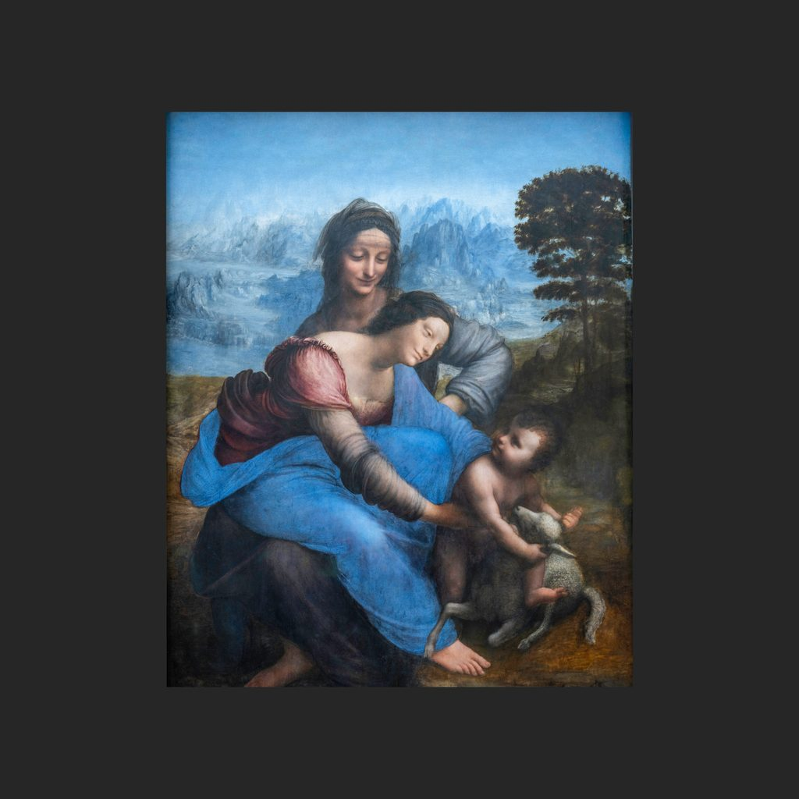

圣母子与圣安娜
列奥纳多·达·芬奇 · 约1503—1519年
La Sainte Anne
讲解节选
小小的耶稣在地上，正抱住一只小羊；他的母亲玛利亚俯下身，向他伸出手。而玛利亚自己，又坐在她母亲圣安娜的膝上。
这就是达·芬奇的《圣母子与圣安娜》，简称《圣安娜》，一幅白杨木板油画，高一米六八。画里是三代人：外祖母安娜、母亲玛利亚，和孩子耶稣。按照卢浮宫介绍的宗教传统，安娜在耶稣出生前就已经去世了，所以三代人同框，是一幅象征性的圣像，并不是一张真实的家庭合影。
— 普通话讲稿 · Artvery
完整讲解约 4 分钟，在 Artvery App 里收听。粤语、台湾普通话、内地普通话三种语音，馆内对准作品即可识别播放。
即将上架 App Store
App 即将上架，敬请期待。上架后免费下载，每座博物馆单独购买，一次购买永久使用。
作品信息
- 作者
- 列奥纳多·达·芬奇
- 年代
- 约1503—1519年
- 尺寸
- 168 × 130 厘米
- 所在
- 卢浮宫 · 德农馆（Denon）
- 馆藏编号
- INV 776; MR 319